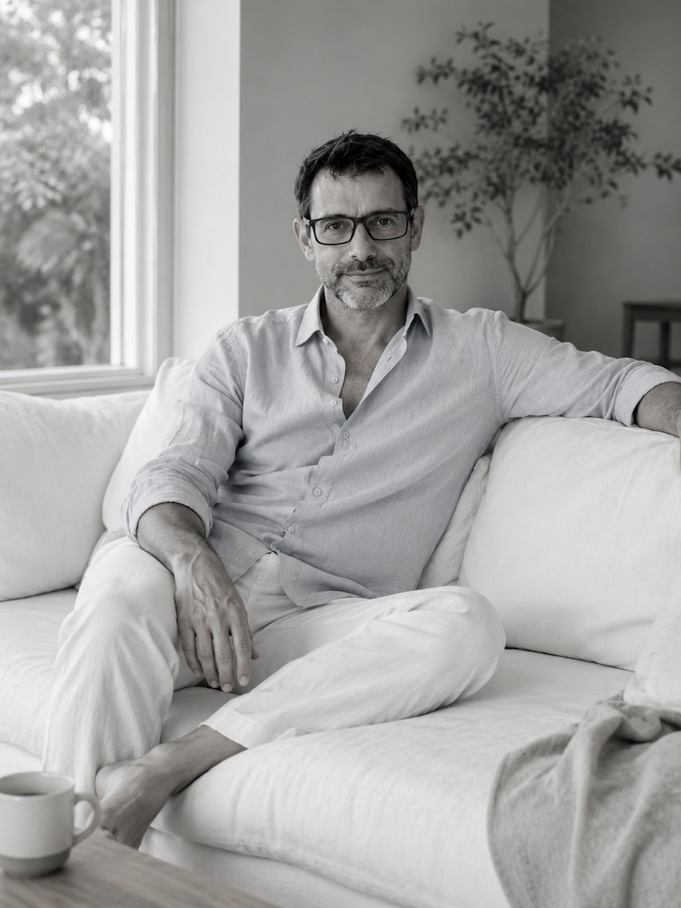

Eksistentiel-humanistisk terapeut

Jeg har boet i Danmark siden 1995 og har en dyb fortrolighed med den danske kultur og det menneskelige livsgrundlag her[cite: 1]. Min terapeutiske praksis er funderet i en naturlig nysgerrighed på verden og mennesket; jeg er optaget af at udforske forskellige kulturer, livsformer, historier og de unikke personlige fortællinger, der former os[cite: 1].
Som terapeut er jeg reflekteret og fagligt velfunderet, og jeg forener humanistisk dybde med en nærværende tilgang til livets udfordringer[cite: 1]. Jeg prioriterer etisk integritet og autentisk kontakt højt, og gennem et minimalistisk og gennemarbejdet setup skaber jeg et trygt rum, hvor vi sammen kan undersøge din vej[cite: 1].
Uddannelse og faglig baggrund[cite: 1]
Min faglige profil er bygget på et fundament i både humaniora og psykologi[cite: 1]. Jeg er cand.mag. i spansk fra Københavns Universitet og har tidligere været ekstern lektor, hvor jeg underviste i litteraturanalyse, litteraturteori samt spansk og latinamerikansk historie[cite: 1]. Min dybe indsigt i menneskets fortællinger har jeg båret med mig over i det terapeutiske felt, hvor jeg i dag arbejder med eksistentiel-humanistisk terapi[cite: 1].
Min terapeutiske uddannelse består af tre mastergrader inden for:[cite: 1]
- — Humanistisk terapi[cite: 1]
- — Eksistentiel terapi[cite: 1]
- — Korttidsterapi[cite: 1]
Min teoretiske base styrkes yderligere af mine psykologistudier i Spanien samt en bred vifte af specialkurser, der spænder fra klinisk psykologi og evalueringspsykologi til børne-, ældre- og buddhistisk psykologi[cite: 1].
I mit terapeutiske arbejde forener jeg denne omfattende akademiske viden med en filosofisk tilgang og et nærværende menneskesyn[cite: 1]. Det er min ambition at kombinere teoretisk dybde med et trygt rum, hvor der er plads til din personlige udvikling og refleksion[cite: 1].
Erfaring og praksis[cite: 1]
Gennem min terapeutiske praksis har jeg haft privilegiet at støtte mange mennesker i deres vigtigste livsforandringer[cite: 1]. Jeg har omfattende erfaring med at hjælpe klienter i processer, hvor fundamentet vakler – hvad enten det drejer sig om skift i arbejdsliv og værdier, religiøse eller familiære opbrud, eller udfordringen ved at etablere sig i et nyt land[cite: 1]. Jeg arbejder indgående med de eksistentielle temaer, der ofte opstår i kølvandet på ensomhed, eller når man skal finde modet til at indgå i nye relationer efter smertefulde brud[cite: 1].
I disse overgangsfaser fungerer jeg som et fortroligt anker[cite: 1]. Mit fokus er at hjælpe dig med at navigere i det nye, så du kan skabe en dybere forståelse af dig selv og komme styrket videre[cite: 1].
Klar til det første skridt?
Det kræver mod at række ud og sætte ord på det, der foregår i dit indre. Denne kontaktform er ikke blot en praktisk indgang, men begyndelsen på et trygt rum, hvor din stemme har betydning.
Jeg inviterer dig til at skrive præcis det, du føler, tænker eller har brug for at dele i dette øjeblik. Du behøver ikke at have de "rigtige" ord eller en færdig forklaring; skriv frit og uden filter. Jeg læser din besked med dyb respekt og nærvær, og jeg vender tilbage til dig hurtigst muligt for at aftale vores videre vej.
Direkte & fortrolig henvendelse
kontakt@ishiki.dk
Send en e-mail til migKlikker du på knappen, åbnes dit sædvanlige e-mailprogram automatisk.